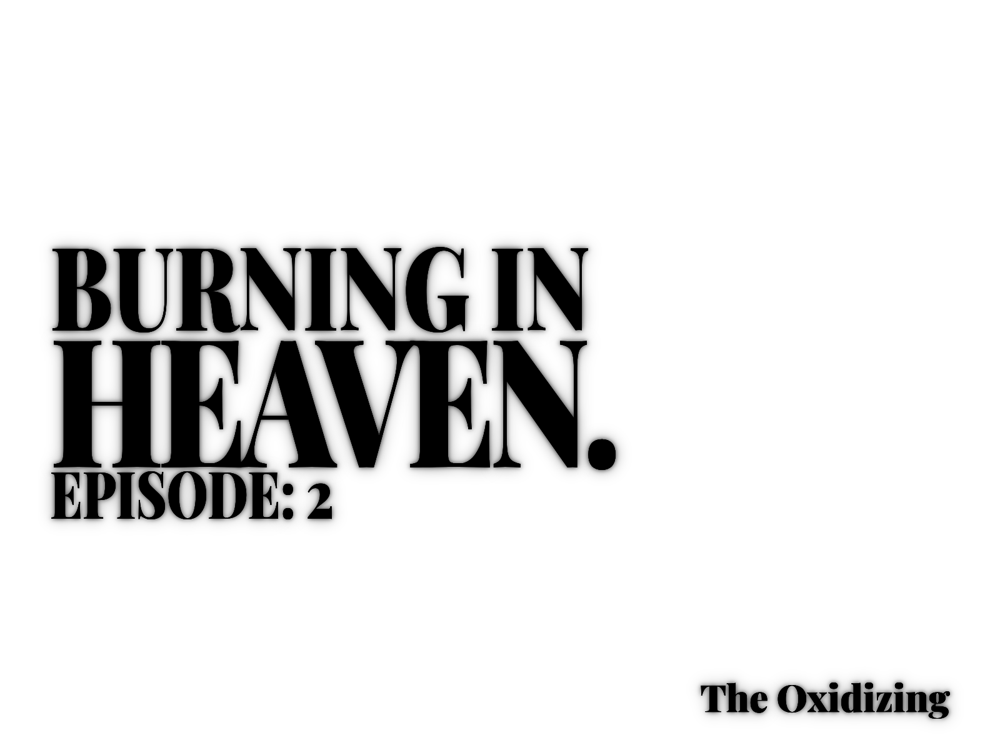

A second entity is confirmed.
This one is stationary. It does not possess the symmetry of the first; the edges of its form are blurred, nearly translucent. It looks washed out, as if it is a copy that has been handled too many times. Furthermore, it ignores the ground. It stares only at the sky.
After several minutes, the birds begin to fall.
They do not fly away or scream, they simply lose the ability to remain in the air. Thousands of them strike the pavement with the sound of wet gravel.
The sky is no longer blue. It has shifted to a jaundiced, bruised yellow. It isn't a glow or a sunset it is the visual signature of the atmosphere oxidizing. The air is becoming caustic.
People are holding their hands up against the light. They are not looking at the angel; they are looking at themselves. Under this specific yellow hue, the skin has become a window. You can see the dark, branching maps of veins. You can see the blood pulsing through the valves of the heart.
Everyone is watching themselves function. Everyone is watching their own clock tick.
, the "washed" angel opens its mouth.
There is no physical sound, no vibration in the air. Instead, the words manifest directly inside the skull, scraping against the skull like a dull blade.
"I'm not proud, thee now can breathe."
As the words fade, the entity begins to unravel. Its form frays into thousands of shimmering fibers a glistening static that drifts upward. It doesn't die; it dissolves, its particles becoming one with the yellow sky.
The angel is gone. No one died. The atmosphere remains.
01 // THE OXIDIZING signifies the Biological Downgrade. The yellow atmosphere isn't a gift or a miracle; it is a caustic solvent that strips away human privacy by making the skin transparent. It forces the witnesses to see themselves as mere "clocks" made of meat and valves. The entity’s departure into "static fibers" confirms the terrifying truth: the "Oxidizing" was just a site-prep. We weren't saved; we were just made compatible with the waste product of a higher process.